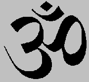

Mapa Indie
Vykopávky v Harappě
|
INDIE

V Evropě je Indie vnímána především jako země překypující duchovnem. Učení guruové předávají tisíciletou moudrost svým učedníkům, vyučují meditaci a józe, recitují matru óm. Indie je ale tak obrovská země, že o ní můžeme prohlásit prakticky cokoliv. Stala se kolébkou několika světových náboženství (buddhismus, hinduismus, džinismus) a vznikla zde řada vynikajících literárních děl, nad jejichž rozsahem zůstává rozum stát. Indická kultura se může pyšnit nepřerušenou tradicí, která trvá více než tři tisíce let. Můžeme se tu setkat s výdobytky nejmodernější techniky, ale lidé stále ctí starobylé tradice. Některé z nich může Evropan těžko pochopit (ženich se s nevěstou vidí poprvé až na svatbě, po ulicích se potulují posvátné krávy, kastovní systém), jiné lidé na Západě s nadšením přijímají (vegetariánství, hledání duchovních hodnot). Záleží pouze na nás, co si z indické kultury odneseme.
|
Historie
Nejstarší civilizace (3000-1500 př.n.l.) na tomto území vznikla v povodí Indu. Jejími centry byla města Harappa a Mohendžodaro. Árjové vtrhli do Indie kolem roku 1500 př.n.l. a osídlili oblast kolem řeky Gangy. V 7. až 4. stol. př.n.l. zde vzniklo 16 samostatných států, z nichž dosáhla největšího vlivu Magadhská říše. Tu vystřídala Maurijská říše (324-185 př.n.l.) a Guptovská říše (320-414 n.l.). Ve 14. stol. dobyli Indii muslimští Turci z Afghánistánu. Posledním velkým útvarem byla Mughalská říše (1526-1750). V 18. stol. se dostává Indie pod nadvládu Angličanů a roku 1858 se stává britskou korunní kolonií. V roce 1947 z ní vznikly samostatné státy Indie (hinduisté) a Pákistán (muslimové).
|
Védy
Nejstarší texty, které vytvořili Árjové, souvisejí především s jejich náboženstvím. Jsou to védy (12. až 9. stol. př.n.l.), bráhmany (8. až 7. stol. př.n.l.), áranjaky a upanišady (6. až 5. stol. př.n.l.).
* Někdy se slovo véda používá v mužském rodě, nemluví se tedy o védě, ale o védu (Rgvéd).

|
Védské texty
Nejdůležitějšími náboženskými texty Indů byly védy (toto slovo by se dalo přeložit jako věda nebo vědění). Celkem byly čtyři – Rgvéda, Sámavéda, Jadžurvéda a Atharvavéda. Šlo o velmi rozsáhlé soubory modliteb a hymnů na jednotlivá božstva, které recitovali kněží (bráhmani) během bohoslužeb. Nejstarší z nich je Rgvéda, sbírka 1028 básní, ve kterých vystupují bohové jako Indra (hromovládce), Agni (bůh ohně), Sóma (bůh stejnojmenného opojného nápoje a Měsíce) a další. Sámavéda je souborem védských melodií a většina básní do ní zahrnutých se shoduje s předchozí védou. Jadžurvéda obsahuje kromě básní také obětnické formule (mantry) převzaté především z Rgvédy. Poslední Atharvavéda zahrnuje kouzelnická zaříkadla a různé postupy z černé magie.
|
Bráhmani
Abychom pochopili rozdělení véd, musíme si vysvětlit, jak vypadaly náboženské obřady. Vykonávali je vždy čtyři kněží. První pronášel texty hymnů, další zpíval příslušnou melodii, třetí mumlal mantry a prováděl předepsané úkony a poslední kontroloval správnost obětního obřadu. Sebemenší chyba mohla přinést neštěstí, případně i zánik celého světa! Indové totiž věřili, že všichni bohové jsou na obětech, tedy vlastně na bráhmanech, zcela závislí.
Srovnej stvoření světa popsané v Bibli s touto ukázkou.
Co je jsoucno?
|
Bráhmany

Krvelačná bohyně Kálí vyžadovala obětování živých tvorů, ojediněle se v Indii prováděly i lidské oběti, anglická koloniální správa je ale zakázala.
Áranjaky a upanišady
Úkolem boha Šivy je zničit v pravý čas svět svým tancem, zároveň jde o boha meditace a jogínů.
|
Bráhmany jsou prozaické texty, ve kterých se vysvětluje význam jednotlivých véd a náboženských obřadů včetně důkladného popisu, jak tyto obřady provádět. Dělí se do čtyř skupin podle příslušných véd. Nejvýznamnější z nich je Šatapathabráhmana (Bráhmana o stovce cest), která obsahuje řadu zajímavých podobenství.
Áranjaky (lesní texty) mohli učitelé svým žákům sdělovat pouze ve skrytu lesních samot. Jejich mystické výklady jsou často nesrozumitelné a na rozdíl od pozdějších upanišad netvoří jejich učení jednotný systém. Upanišady (přisednutí) jsou důvěrná sdělení, která předával učitel žákovi mezi čtyřma očima. Jde vlastně o filozofické texty, které se zabývají problematikou lidské existence, světa i života. Upanišady se částečně odklánějí od obětí a bohů. Jejich autoři dospěli k názoru, že základem všeho je vesmírný princip brahma, jehož součástí je i lidská duše átman. Člověk by se měl soustředit především na pochopení jednoty veškerých věcí i dějů a na splynutí vlastní duše s tímto abstraktním principem. K tomu může používat různé duchovní techniky, např. jógu, askezi (odříkání), meditaci atd. Upanišady už obsahují základní myšlenky, na kterých je postaven pozdější hinduismus. Je to především víra v koloběh života (sansára) a v převtělování duší (karma).
|
Kastovní systém
Árjové, tj. Urození nebo Vznešení, se nechtěli smísit s původním obyvatelstvem, a proto zakázali vzájemné sňatky. Původní obyvatele (říkali jim čandálové neboli nedotknutelní, protože je mohl každý bráhman beztrestně zabít, pokud se ho pouze dotkli) považovali za nečisté, upírali jim základní práva a nutili je vykonávat nejhorší zaměstnání (obstarávání mrtvých). Sami Árjové tvořili čtyři společenské skupiny neboli varny (barvy). Nejvýše stáli bráhmani (kněží a vzdělanci), o stupeň níže byli kšatrijové (panovníci a bojovníci), dále vaišjové (obchodníci, řemeslníci a rolníci) a na posledním místě byli šúdrové (neplnoprávní sluhové). Toto nerovné rozdělení společnosti dále prohloubil kastovní systém. Kastu charakterizuje především určité zaměstnání (dnes existují v Indii tisíce kast, např. řezníci) a zákaz sňatku mezi příslušníky kast jiného stupně. Kastovní příslušnost získá člověk narozením a je doživotní. Společenské styky mezi jednotlivými kastami jsou mizivé.
Zamysli se nad tím, co má společného kastovní systém s nacistickou ideologií.
Jak rozumíš této ukázce z upanišady?
Co víš o józe a meditaci?
Věříš na reinkarnaci?
Kterým zvířetem chceš být v příštím životě? Proč?
Napiš životopis člověka, který prošel v minulých životech nejrůznějšími podobami.
|
Gautama Buddha
Buddhismus se záhy rozdělil na dva proudy. Původní théraváda neboli hínajána (malý vůz) umožňovala dosažení nirvány pouze mnichům, v mahájáně (velký vůz) se mohou stát Buddhou všichni. Cílem druhého směru je přivést k buddhismu co nejvíce stoupenců. Největším vzorem jsou tzv. bódhisattvové, kteří dosáhli nirvány, ale dobrovolně se jí vzdali, aby mohli šířit Buddhovo učení mezi obyčejnými lidmi. Mahájána se stala náboženstvím v pravém slova smyslu, protože ji doprovází bohatá mytologie. Nejdůležitějším textem tohoto proudu je Lotosová sútra. Hínajána byla brzy z Indie vytlačena na Srí Lanku a prosadila se v Barmě, Thajsku, Kambodži a Laosu. Mahájána se rozšířila do Nepálu, Tibetu, Číny, Korey a Japonska.
Můžeme považovat buddhismus za náboženství? Pokus se najít argumenty pro i proti.
Jaký je tvůj názor na citované myšlenky z Dhammapady?
|
Buddhismus
Gautama Buddha (563-486 př.n.l.) se narodil jako princ Siddhártha a vše nasvědčovalo tomu, že prožije bezstarostný život v přepychu. Jeho otec se ho dokonce snažil uchránit pohledu na sebemenší utrpení, a proto mu nedovolil opustit královský palác. Princ ho ale neposlechl a na svých výpravách spatřil poprvé na vlastní oči starce, nemocného a mrtvého. Setkal se také s asketou a rozhodl se ho následovat. Opustil manželku i syna, vzdal se bohatství i trůnu a začal žít jako poustevník. Po mnoha letech hledání správné cesty dosáhl osvícení a stal se Buddhou (Probuzeným).
Základem jeho učení je poznání čtyř vznešených pravd:
1) Na tomto světě nás čeká pouze utrpení (narození, nemoc, stárnutí, smrt, odloučení od milované bytosti, nedosažení žádaného…).
2) Příčinou utrpení jsou naše touhy a přání.
3) S jejich odstraněním zmizí i utrpení.
4) K odstranění utrpení vede osmidílná cesta správného názoru, rozhodnutí, řeči, jednání, způsobu života, snažení, uvažování a duševního soustředění.
Pokud člověk tyto pravdy naplní svým životem, vysvobodí se z koloběhu nových zrození a dosáhne nirvány (blaženosti, vyvanutí).
Tři koše
Sám Buddha své učení nezapsal, až do 1. stol. př.n.l. se předávalo ústní tradicí mezi mnichy. Ti se několikrát sešli, aby se shodli na závazném znění jeho myšlenek a dali řád novému náboženství. Tento text nazýváme Tři koše (Tipitaka) nebo pálijský kánon, podle jazyka páli, ve kterém byl složen. Tvoří ho Koš řádové disciplíny (pravidla pro život buddhistických mnichů), Koš pouček (vlastní Buddhovo učení) a Koš víry (méně významný dodatek připojený až na buddhistickém koncilu, který svolal Ašóka). Nejzajímavějšími texty z tohoto velmi rozsáhlého díla jsou Dhammapada – překládá se jako Cesta nauky nebo Slova víry (Buddhovy výroky o přátelství, zlu, trestu atd.) a džátaky (bajky, pohádky a mravoučné příběhy, které vyprávějí o minulých životech Buddhy).
Dhammapada
160. Člověk je pánem sám sobě; kdo jiný by mu pánem měl být? Opanuješ-li sám sebe, máš pána, jejž bys jinak těžko získal.
5. Nenávist nelze nikdy přemoci nenávistí. Jen láska přemůže nenávist, to je zákon odvěký.
50. Pochybení ostatních si nevšímej, ani co a jak dělají; své vlastní jednání sleduj, cos udělal a cos pochybil.
279. Kdo pozná, že vše, co vzniklo, není skutečné, toho se hoře netkne. Toť cesta k očistě.
|
|
Ašóka
Buddha neuznával výsadní postavení bráhmanů, modlitby k bohům ani oběti. Jeho učení bylo určeno každému člověku bez ohledu na příslušnost k některé kastě, a proto se velmi rychle rozšířilo po celé Indii. Velkou zásluhu na tom měl i král Ašóka (272-232 př.n.l.), který se k buddhismu přihlásil a začal po celé zemi vztyčovat sloupy s prvními nápisy, které obsahovaly hlavní myšlenky Buddhova učení (např. Jen pravda vítězí). Nechal také vybudovat stúpu v Sánčí a svolal koncil, na kterém byla sestavena definitivní verze buddhistického kánonu, tzv. Tři koše (Tipitaka).
Ašókův nápis v písmu brahmí

Buddhistická stúpa v Sánčí. Stúpy jsou vlastně schránky na Buddhovy ostatky. Mají podobu převrácené misky.
|
Hinduismus

Indický chrám v Mahábalipuramu
|
Hinduismus
Hinduismus navázal na tradiční indické náboženství. Zásadním impulzem k jeho vzniku bylo masivní rozšíření buddhismu, což se nelíbilo hlavně bráhmanům, kteří přicházeli o výsadní postavení. Hinduismus nabízel lidem kromě tradice obětí také bohatou mytologii (purány) a velká vypravování (eposy Mahábhárata a Rámájana). Díky tomu získali brzy bráhmani svůj předchozí vliv a buddhismus byl vytlačen na okraj zájmu. Hinduistických božstev a příběhů o nich je bezpočet. Nejvýznamnější z nich je trojice Brahma (stvořitel), Višnu (udržovatel) a Šiva (ničitel světa).
|
Purány
Purány jsou sbírky hinduistických mýtů.
|
Mahábhárata
Kršna promlouvá k Ardžunovi. Podle purán sestoupil bůh Višnu na zem několikrát v různých podobách (avatárech), např. jako želva, trpaslík, ryba nebo právě Kršna a také Ráma.
|
Mahábhárata (400 př.n.l. až 400 n.l.)
Indický národní epos Mahábhárata (Velký boj Bharatovců) vznikal řadu staletí a obsahuje 200 tisíc veršů. Toto dílo je tak rozsáhlé, že v úplnosti zřejmě nebude nikdy přeloženo do češtiny. Děj je navíc tak složitý, že ho lze převyprávět jen s obtížemi. Základem je konflikt mezi dvěma spřízněnými rody – Kuruovci a Pánduovci. Pánduovci prohrají svou část království v kostkách a musejí odejít do vyhnanství. Když doba vyhnanství pomine, chtějí zpátky svůj majetek, ale jejich bratranci jim ho odmítnou vydat. Střetnou se s nimi tedy ve velkém boji, kde se na stranu obou skupin postaví všichni králové Indie, démoni i bohové. Pánduovci nakonec všechny Kuruovce pozabíjejí.
Bhagavadgíta
Součástí eposu Mahábhárata je Bhagavadgíta (Zpěv Vznešeného), což je báseň o smyslu života, která zachycuje rozmluvu mezi vozatajem Kršnou (vtělení boha Višnua) a bojovníkem Ardžunou. Před začátkem velkého střetu Pánduovců a Kuruovců Ardžuná váhá, jestli se má pustit do bratrovražedného boje. Kršna mu vyloží, že jako kšatrija (bojovník) se musí držet své dharmy, ale pokud všechny své činy odevzdá jemu, neznečistí se jeho duše jejich plody a vymaní se z věčného koloběhu převtělení. Toto učení se stalo jedním z hlavních proudů hinduismu, který po věřících žádá především oddanou lásku ke Kršnovi.
|
Co je zde, to je všude, a co zde není, není ani nikde jinde.
|
|
Bůh Višnu udržuje tento svět.
Bůh Brahma svět stvořil.
|
Ráma a Síta
|
Válmíki: Rámájana (400 př.n.l. až 200 n.l.)
Za autora eposu Rámájana je považován světec Válmiki, dílo však bylo dále doplňováno. Rámájana je mnohem ucelenější než Mahábhárata a je také čtyřikrát kratší (48 tisíc veršů). Vypráví o lásce prince Rámy a jeho manželky Síty, kterou unesl zlý démon Rávana na ostrov Lanku. Ráma sebere vojsko a společně s opičím králem Hanumanem démona porazí a svou manželku vysvobodí. Jelikož má Ráma pochybnosti, zda mu zůstala po celou dobu věrná, musí projít Síta zkouškou ohněm.
|
Válmíki
Válmíki je považován za prvního indického básníka a jeho epos Rámájana za nejstarší báseň. Je totiž psána daleko poetičtějším jazykem než Mahábhárata.

Ráma a Síta
O čem vypráví tato ukázka z Rámájany?
|

Pečeť z Mohendžodara s nejstarším indickým písmem.

Kniha z palmových listů
|
Jazyk a písmo
Nejstaršími doklady indického písma jsou pečetidla z Mohendžodara, která obsahují kratičké, dosud nerozluštěné nápisy v neznámem jazyce. Árjové mluvili indoevropským jazykem, jehož nejstarší podobu nazýváme védský nebo mantrový dialekt. V 5. stol. př.n.l. sepsal bráhman Pánini první gramatickou příručku na světě, která popisuje pravidla sanskrtu. Tento dnes už mrtvý jazyk byl považován za božský výtvor, a proto se stal jazykem náboženských, uměleckých i vědeckých děl. Obyčejní lidé ale mluvili v prákrtech (různá nářečí, kterých jsou dnes v Indii stovky).
Indové své texty dlouho nezapisovali, protože více věřili vlastní paměti. Bráhmani se učili veškeré texty zpaměti, což je vzhledem k délce ústního tradování (skoro tisíc let) a k rozsahu indické literatury (Mahábhárata má 200 000 veršů, Rgvéda 1028 básní) neuvěřitelné. Nejprve začali používat písmo buddhisté, kteří pro své texty nepoužívali archaický sanskrt, ale srozumitelnější jazyk páli. Toto písmo bylo velmi jednoduché. Nazývá se brahmí a najdeme ho především na sloupech krále Ašóky (272-232 př.n.l.). Z tohoto písma se vyvinula řada dalších systémů používaných v celé jižní Asii, především písmo dévanágarí (božské písmo), které se používalo k zapisování sanskrtských textů a převzala ho i moderní hindština.
|
Ukázka indického systému slabik. V prvním řádku je výslovnost, ve druhém zápis v písmu brahmí a na posledním je písmo dévanágarí.
List z indické knihy
|
Vátsjájana: Kámasútra
Nejznámější indickou učebnicí je Vátsjájanova Kámasútra, která zřejmě vznikla v 3. až 5. stol. n.l. Kromě rad psaných prózou obsahuje i poetické pasáže ve verších.

Indická tanečnice
|
Učebnice
Základem výkladu v indických učebnicích byly sútry (vlákna). Šlo o hutné poučky, které se museli žáci naučit nazpaměť. Každá sútra musela být doplněna učitelovým komentářem, protože jinak by byla zcela nesrozumitelná. Učebnice neboli šástry dělíme do tří okruhů. Dharmašástry se zabývaly dharmou (duchovním životem) – šlo o souhrn povinností každého člověka, který se liší podle věku, pohlaví nebo kastovní příslušnosti, na němž se zakládalo zvykové právo. Arthašástry se zaměřovaly na praktický život nebo rady panovníkům, jak vládnut, a kámašástry byly věnovány milostnému životu.
Další díla
Paňčatantra (bajky)
Sómadéva: Oceán příběhů
|
Vátsjájana byl mnich, ale evropské představy o mnišství byly zcela opačné. Křesťanské řehole jsou založené na odříkání, ne na psaní učebnic lásky. O tom, že indická kultura je od evropské značně odlišná, svědčí chrámové komplexy v Khadžuráhu, které jsou plné erotických výjevů.
Jak si lidé projevují náklonnost dnes?
|
Internetové stránky
Umění Indie
Dějiny Indie
Indie
Buddhismus, internetový rozcestník
Buddhismus
Angkor, buddhistický komplex (Kambodža)
Languages and sripts od India
Harappa
Hindunet, rozcestník
Indologický ústav FF UK
Exkurze
Hare Kršna, náboženská sekta působící v Čechách a spravující síť indických jídelen Góvinda
Tipy
DharmaGaia, nakladatelství zaměřené na orientální literaturu

Rituální očista v posvátné Ganze
|
Doporučená četba
Amaru a Bhartrhari: Sloky o lásce, moudrosti a odříkání, přel. O.Friš, Praha 1959
Bhagavadgíta (část Mahábháraty), přel. J.Filipský a J.Vacek, Praha 1976
Bohové s lotosovýma očima, Praha 1986
Bondy, E.: Indická filozofie, Praha 1991
Dhammapadam, Cesta k pravdě, přel. K.Werner, Praha 1992
Džátaky, Příběhy z minulých životů Buddhy, přel. D.Zbavitel, Praha 1992
Filipský, Vacek: Ašóka, Praha 1971
Fišer, Zbyněk: Buddha, Odeon, Praha 1968
Hesse, Hermann: Siddhárta (román)
Johnson, Gordon: Svět Indie, přel. D. Zbavitel, J.Vacek, Knižní klub, Praha 1998
Krása, Marková, Zbavitel: Indie a Indové, Od dávnověku k dnešku, Vyšehrad, Praha 1997
Lesný, V.: Buddhismus, Praha 1948,
Mahábhárata aneb Velký boj, převyprávěl V.Miltner, Praha 1988
Miltner, V.: Indie má jméno Bhárat, Praha 1978
Miltner, V.: Příběhy bájné Indie, Praha 1973
O statečném Rámovi a věrné Sítě, H.Preinhaelterová (místo D.Zbavitele) Praha 1975
Paňčatantram, Patero naučných oddílů, přel. F.Jílek, Praha 1968
Pertold, O.: Džinismus, Praha 1966
Preinhaelterová, H.: Hinduista od zrození do zrození, Praha 1997
Rámájana, převyprávěl O.Friš, Praha 1957
Sómadéva: Oceán příběhů, přel. D.Zbavitel, Praha 1981
Upanišady, přel. P.Kadula, Praha 1990
Vátsjájana Mnich: Kámasútra, přel. V.Miltner, Praha 1969
Védské hymny, přel. O.Friš, Praha 1995
Wanguová, M.B.: Buddhismus, přel. V.Miltner, NLN, Praha 1996
Zbavitel, D. a kol.: Bozi, bráhmani, lidé, Čtyři tisíciletí hinduismu, Nakladatelství Československé akademie věd, Praha 1964
Zbavitel, Vacek: Průvodce dějinami staroindické literatury, ArchaJimFa, Třebíč 1996
Zbavitel, D.: Rabíndranáth Thákur, Praha 1961
Zbavitel, D.: Starověká Indie, Praha 1985
|
Připrav si referát o některé z uvedených knih nebo internetových stránek.
Indický bůh štěstí Ganéša
Bůh Indra byl vládcem hromů a blesků.
|
|